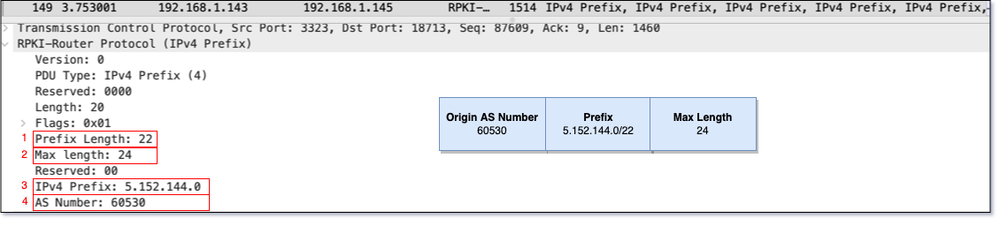

Networks - RPKI , securing BGP Infrastructure
Table Of Contents
Introduction
What & Why RPKI (Resource Public Key Infrastructure)?
BGP is the routing protocol of the Internet backone, but it always lacked a way to validate recieved routes, this opened the protocol up tp some nasty attack of which one of the more popular ones is Route Hijacking in which a peer would falsely or mistakingly advertise some routes as if it is the originator, you can read more about an example of this case in Taiwan’s TWNIC hijack in 2019, intentional attack could have resulted in either blackholing the traffic, or driving traffic towards a sniffing device to spy.
In order to overcome this, and RFC was created RFC-6810 and a work group was spun up to push for the implementation of this. feature represented by MANRS (Mutually Agreed Norms for Routing Security).
What happens that the BGP running device validates the recieved BGP route againt the RPKI local database to confirm the validty of the originating AS.
RPKI is used for Origin Validation and not AS-Path validation , RPKI validation process only looks at the OriginAS in the Route NLRI, however it does not look in AS Path, so you may have a hijacker start a malicious router with your AS number behind his own AS and use that to advertise your prefix, or AS-Path, you should be doing Prefix filtering on your boundaries anyways.
Signing ROAs
1st you need to understand that there is 5 Certificate Authorities in conjunction with the RIRs (Regional Internet Registry) charged with creating and validating the carriers certificates, you should register ROAs with your RIR, using your already created service provider account.
side note - Certificate providers are AFRINIC, APNIC, RIPE NCC, LACNIC, ARIN.

what is an ROA ?
The Route of Origin Authorization simply consists of a Prefix and its Origin, indicating which AS (Autonomous System) is authorised to advertise this Prefix. Multiple ROAs can exist for the same Prefix, ROAs can overlap.
I can better show you how an ROA looks like from a captured RPKI Route Update :

in the above snapshot, means you can advertise any network in between the /22 and /24 subnet mask, so its not only allowing you advertise one subnet, but a range of subnet masks.
Cool way to search for the registered prefixes on NLNOG’s IRR Exp , this enables you to see which IRR is a particular ROA is registered with:
You can do the same validation of a prefix on your created validator (which we will do later in this in article) using :
How you deploy ?
Simply you will need to do the following, we will go more in detail later:
- Create ROAs (Route of Origin Authorization).
- Setting up Validators (Validation Cache Servers).
- Discarding BGP invalids on boundry routers .
RPKI-RTR architecture
RPKI-RTR is the protocol used in between the validator and the Client routers, the RFCs states the structure to deploy the RPKI service as per the following driagram : Note : Local Cache = Validator

PDUs Structure (rpki-rtr-pdu)
The update header includes the following :
- Protcol Version : currently version 0
- PDU Type : IPv4 for example
- Serial Number : Indicates the last update number recieved from the upstream Cache or Global RPKI server, so if the downstream client router sends his last PDU Serial number to the upstream Cache , the Cache will send the client router all PDUs with greater Serial number which correspinds to the the updates that this client router did not recieve yet .
- Session ID : Used in conjunction with the Serial number to identify these Serial Numbers are still attached to the same session that is established with the upstream server.
- Length : length of the whole PDU
- Flags : 1 for Announcement - 0 for Withdraw
- Prefix Length : Shortest Prefix (Min)
- Max Length : Longest Prefix (Max)
- Prefix : The IP Portion
- AS : 32-bit format AS number (Autonomous Number)
Note : IPx PDU uniqueness is identified by the set of [Prefix, Len, Max-Len,ASN]
Protocol workings
RPKI uses the port rpki-rtr TCP 323, also cache to router communication is recommeneded to use TCP-A0 (you can check RFC-5925) for authentication instead of TCP-MD5.
Serial Query/Cache Response
A session is kept up between either the RPKI Cache and the Global RPKI server , or between the downstream RPKI client router and the RPKI Cache. The router periodically sends the Cache server the last (greatest) PDU Serial number , the cache responds by sending all the updates with a higher Seral number, then the client router updates its current serial number to the last PDU recieved. To make sure that the data is up to date a Keepalive like interval of 1 hour, at which the Client router should send a Serial Query to make sure his updates are up to date.
Serial Notify
When the RPKI Cache recieves updates, it send a Notification to its clients, saying this is a good time to Poll for new data, Client routers must be the one initiating the requests for the update .
End of data
If the Cache recieves a query and finds that there is no updates to send to the Client router, instead it sends an End of data PDU
Reset Query
Client router requests the whole current updates database from the Cache server, this message can be sent in the rest or the start of the connection so the Client can recieve a full table f updates from the caching server, initiation looks as follows .
Applying RPKI
We are using Ubuntu with Routinator which is a RIPE developed Route Validator, and 2 IOS-XE routers, Router_1 is RPKI Client, and Router_2 is the eBGP peer that will send the invalid subnet 1.0.0.0/24 .
After ROA is created, it may take to 10 minutes to show up in the Registries databases and would be able to validate.
1) Setup a Validator
There is multiple validators available on the market , we will be using Routinator ,a validator developed by RIPE. Remember RPKI Validators downloads the whole RPKI Repository from the RIRs databases, acting as cache afterwards, keeping its database updated by queriing the RIRs periodically .
There are multiple Validtor softwares available other than Routinator if you prefer such as OpenBSD’s RPKI-Client , Cloudflare’s OctoRPKI , or FORT’s Validator.
For now we are going to use Routinator, but feel free to use any of these packages.
steps
Update and install gcc C compiler, then installing Rust as Routinator is written in Rust, after that we run it .
$ sudo apt update && sudo apt upgrade
$ sudo apt-get gcc
$ curl https://sh.rustup.rs -sSf | sh
$ source $HOME/.cargo/env
$ cargo install routinator
All RIRs repos are by default open to be queried with no issue, but for ARIN, you have to acknowledge you have read the terms and accept, to accept the ARIN’s aggreement :
`$ routinator init --accept-arin-rpa`
Following command will show and print out the whole Global IP Address allocation (ROAs) , it could some time , i would advise to run it in the background :
`$ routinator -v vrps`
To have the Routinator(Validator/RPKI Cache) start listening to Client’s/Router’s request, start the service with the following command, the default port for RPKI should be 323, but to avoid running the server as root, we will be using port 3323 instead :
`$ routinator server --rtr 192.168.1.143:3323 --refresh=900 `
Following how your newy installed validator communication looks like
Allow List
You can create a whitelist locally in your validator, to add exceptions for some subnets that you donot need validated.
2) Discarding BGP invalids / configuring routers
On a Cisco IOS-XE router, its as simple as running the following command under the “router bgp xxxxx” config
-
My Authenticator server IP is 192,168.1.143 and port 3323 is the listening port :
Router(config-router)#bgp rpki server tcp 192.168.1.143 port 3323 refresh 900
Now on the Cisco router I am connected to the validator server and able to see the established session
Router#show ip bgp rpki servers
BGP SOVC neighbor is 192.168.1.143/3323 connected to port 3323
Flags 64, Refresh time is 900, Serial number is 0, Session ID is 30149
InQ has 0 messages, OutQ has 0 messages, formatted msg 1
Session IO flags 3, Session flags 4008
Neighbor Statistics:
Prefixes 299821
Connection attempts: 1
Connection failures: 0
Errors sent: 0
Errors received: 0`
and you can see the whole ROA table
`Router(config-router)#do show ip bgp rpki tab
228256 BGP sovc network entries using 36520960 bytes of memory
250017 BGP sovc record entries using 8000544 bytes of memory
Network Maxlen Origin-AS Source Neighbor
1.0.0.0/24 24 13335 0 192.168.1.143/3323
1.0.4.0/24 24 38803 0 192.168.1.143/3323
1.0.4.0/22 22 38803 0 192.168.1.143/3323
1.0.5.0/24 24 38803 0 192.168.1.143/3323
1.0.6.0/24 24 38803 0 192.168.1.143/3323
.......
Note that this table is not your routing table, its for validation not for route reflection. Now to further have a look about the PDUs , i setup a wireshark capture, after that, you need to go to the capture stream of the port 3323 and click decode as/current/RPKI-Router-Protocol like the following screenshot
You can also use the RPKI validation in your router’s route policy’s (Cisco, Juniper and so on), for instance you can set a preference for the validated routes, you donot need to reject the non-validated routes, you can just set a worse preference for them.
3) Validating RPKI operations
eBGP configured between Router_1 (RPKI Client) and Router_2 (Hijacking router) , and network 1.0.0.0/24 is advertised from Router_2 to Router_1, when we inspect Router_1’s routing table we see the subnet not present, meaning RPKI is working. To see the reason for rejecting the route on Router_1
Router_1#show bgp 1.0.0.0
BGP routing table entry for 1.0.0.0/24, version 0
Paths: (1 available, no best path)
Not advertised to any peer
65004
10.0.0.2 from 10.0.0.2 (10.0.0.2)
Origin IGP, metric 0, localpref 100, valid, external
path 7FA8A922B2E8 RPKI State invalid <<<<<<<<<<<<<<<<<<<<<<<<<<<<<<<<<<<<
rx pathid: 0, tx pathid: 0
MANRS
(Mutually Agreed Norms for Routing Security) MANRS is a group of operators initiative pushing for route security and security actions, they publish an Actions whitepaper for service providers how to participate and which actions is compulsory and which actions are options. You can find detailed explanation in their publication on manrs.org.
Compulsory Actions to join
- Prevent probagation of incorrect routing information : mainly confirm their peer service provider actually holds that IP Prefix and AS number.
- Correct up to date NOC Contact for carriers correspinding to prefixes/ASs should be registered and kept current with Regional and/or National regisry (RIR & NIR), can be registered with the PeeringDB (PeeringDB Network Operators HowTo).
- Carriers must publicly document their owned subnets/ASs and also which prefixes/ASs they provide Transit services for through their RPSL with IRRs, or RIRs, and NIR databases, also recommended to create ROAs (Route of Origin Authorizations) foe the list of prefixes will be advertised by the carrier.
- Prevent Spoofed traffic by using source address filteration or a tool like uRPF.
References
- (Article) What is BGP ROute Hijacking ?
- (RFC_6810) The Resource Public Key Infrastructure (RPKI)
- (Website)IANA Numbering organizations and scope
- (Website) Mutually Agreed Norms for Routing Security (MANRS) - SP Group
- (Article) BGP RPKI With XR7 (Cisco8000) Whitepaper
- (Article) RPKI ROAs Authentcator - Ubuntu setup
- (Article) One Does Not Simply “Deploy RPKI”
- (Video) MANRS session - understanding RPKI deployment
- (Article) AFRINIC’s RPKI Guide
- (Website) Routinator Documentation
- (Article) How to install Routinator Validator